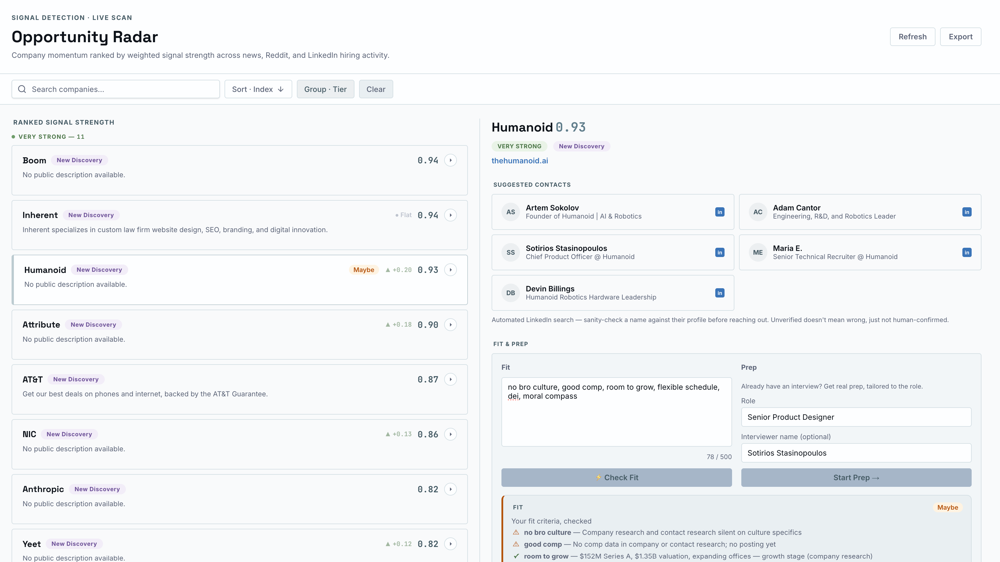
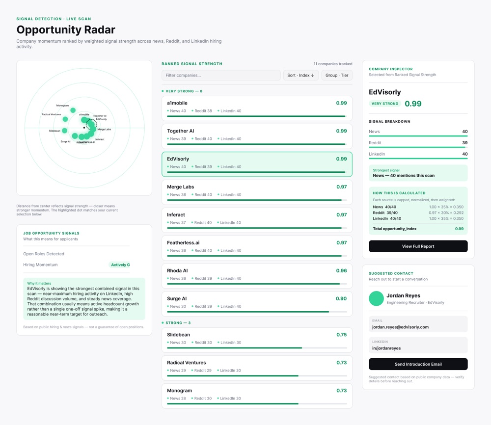
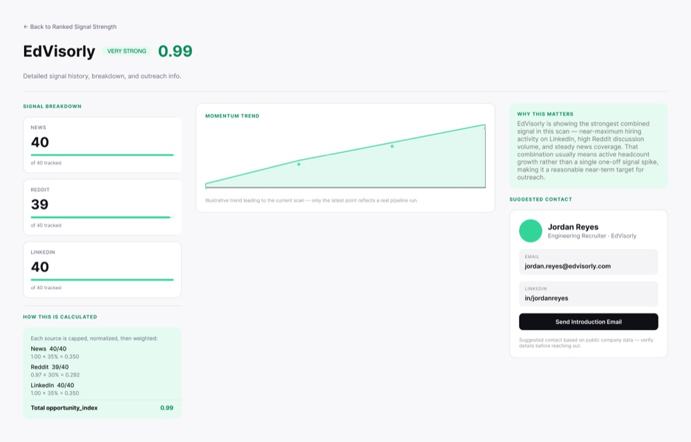
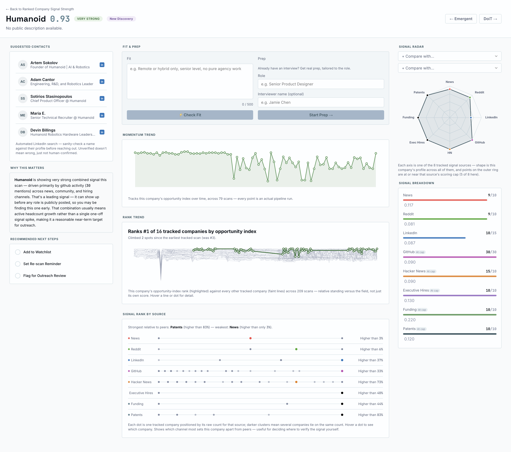
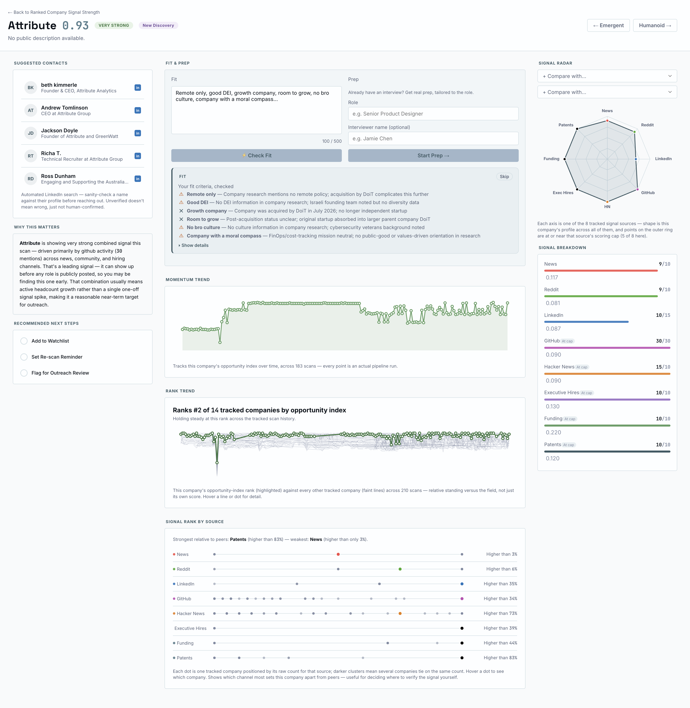
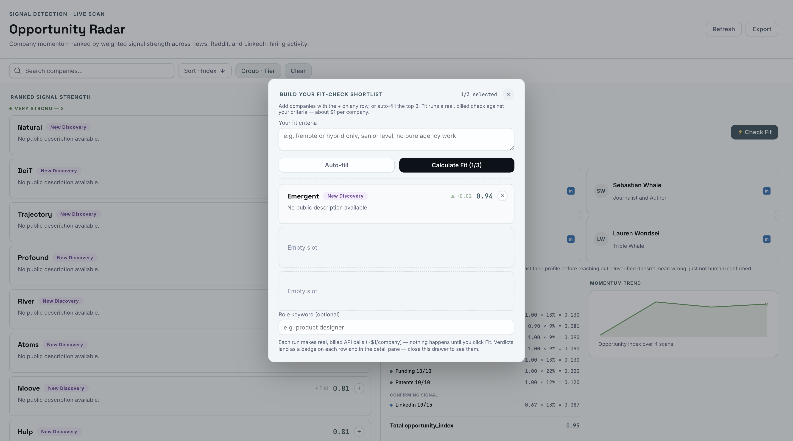

Opportunity Radar
An n8n flow which finds companies likely to be hiring before roles are even posted: a live dashboard ranking hiring momentum by tracking signal strength across news, Reddit, LinkedIn, GitHub, Hacker News, funding, and exec hires in real time.

Fit, Prep, and Close, all running on one selected company.
Started in a coffee shop, mid job search. The idea: hiring leaves a trail — news, community chatter, funding, exec hires — and if enough of those signals line up, you can infer a job opportunity exists before it's ever posted.
I was already in a discovery headspace: three certificate courses running in parallel, deep in product-discovery thinking. One instructor, John Whalen, mentioned n8n in passing. I dove in.
v1.0 was two days of vibe-coding the JS node configuration in ChatGPT — a lot of back-and-forth, a lot of fighting to keep scope in check. What came out the other side only populated a Google Sheet with company names. No interface, no polish.
It was enough. A favorable reply on LinkedIn was the real validation — the research was already sitting in plain sight, not something a formal study needed to prove.

The friction that started it: over 100 applicants before most people even see the posting.
The favorable reply meant it was worth revisiting. v2.0 added more signal sources and rebuilt the pipeline simpler than the original.
This time I wanted a real interface, and I'd just started working with Claude instead of ChatGPT. I exported the n8n workflow's JSON and handed it to Claude to derive the project's actual function and goals — then asked it to sketch a first UI pass in Figma, through an MCP connection I'd set up earlier but hadn't used much yet.
One of Claude's early suggestions was a radar-style view of the ranked opportunities. It stuck. That's where the name came from.


A short stretch of iterating in Figma made it obvious the DOM itself was the faster loop — no translation step between design and working code. Figma got abandoned from there on, except for one deliberate detour: once the HTML and CSS had matured enough to have real patterns worth naming, I went back and derived a style guide from what already existed, rather than designing one in advance.


I kept seeing references to project .md documents — briefs, philosophy docs, style guides — treated as essential scaffolding by people further along than me. I didn't know what most of them actually were. I took a short class on it, then made a deliberate effort to write a handful of grounding documents for this project as it was being built, not before.
That's backwards from how it's supposed to work — you're meant to draw the blueprints before you start building, not while the building's already standing. But that's the honest order this one happened in, and doing it at all mid-build beats not doing it.
The genuinely frustrating part: realizing, halfway down some rabbit hole, that a grounding doc written earlier would have kept me out of it. Not a tooling problem — my own gap in knowing which guardrails a project like this needs before it needs them.
Partway through, I wasn't sure whether Opportunity Radar was an agent or not — and realized I didn't have a rigorous way to answer that. So I derived one: three tests. Could you write the rule down? Is a simpler tool structurally capable of this at all? Would two competent people reasonably disagree, given identical input?
Run against Opportunity Radar itself, the answer was no on all three — a real, useful pipeline, but every step resolves the same way from the same input. No genuine judgment call anywhere in it.
That's also where Fit, Prep, and Close came from. I'd been trying to bake a "is this worth pursuing / how do I prep / what do I ask for" layer directly into Opportunity Radar. Once the three tests existed, it was obvious why that kept feeling bolted-on: those three pieces are real judgment calls, agentic by the same test Opportunity Radar itself fails. They split off into their own project because they're a genuinely different kind of thing, not a feature of this one.
A leaderboard ranked by weighted opportunity index, a company inspector panel with momentum trends and suggested contacts, and a per-company detail view breaking down exactly how each score was calculated, so the ranking is legible, not a black box. Fit, Prep, and Close — the three judgment-agent pieces from the previous section — run in situ, one company at a time, right in that same detail pane.





Live and in use: it's surfaced real companies with rising hiring momentum and the people at each one worth reaching out to directly.
The real value here isn't just a personal job-search tool. It's the instinct underneath it: find the real signal inside a messy problem, build the smallest system that reliably surfaces it, and stay honest about what it can and can't yet prove. That's the same instinct a business needs from its product design, whatever the actual problem turns out to be.
The live dashboard itself surfaces real suggested contacts at each tracked company, so it isn't posted publicly. Get in touch for a walkthrough.
- Product Design
- n8n
- Live Product